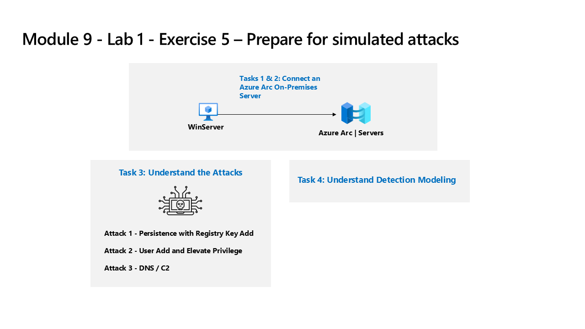
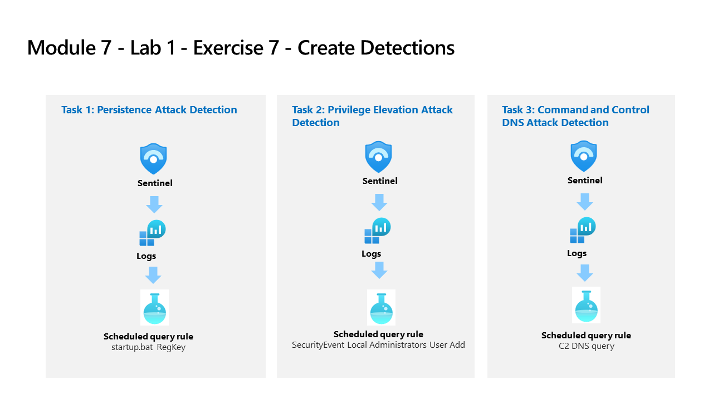

Lab 7 – Microsoft Sentinel: Analytics Rules, Detections & ASIM
SC-200: Microsoft Security Operations Analyst
Overview
Built Sentinel analytics rules from scheduled queries, configured entity behavior analytics, simulated three real-world attack patterns against a connected server, wrote KQL detection rules for each attack, and implemented ASIM (Advanced Security Information Model) normalization parsers. Supplemented with Microsoft Learn exercises for Sentinel analytics setup and threat detection.

Lab architecture diagram — Source: MicrosoftLearning/SC-200T00A-Microsoft-Security-Operations-Analyst, MIT License
Tasks Completed
Created a scheduled query analytics rule from a Sentinel template
Configured entity behavior analytics (UEBA) and enabled entity pages for users and hosts
Connected WinServer to Azure Arc as an on-premises server target for attack simulations
Simulated Attack 1: Persistence via registry key add (startup.bat RegKey)
Simulated Attack 2: User add and privilege elevation (SecurityEvent — Local Administrators)
Simulated Attack 3: Command and Control DNS query (C2 DNS beaconing)

Lab architecture diagram — Source: MicrosoftLearning/SC-200T00A-Microsoft-Security-Operations-Analyst, MIT License
Created a scheduled query detection rule for the persistence attack (startup.bat RegKey in SecurityEvent)
Created a scheduled query detection rule for the privilege elevation attack (Local Administrators User Add)
Created a scheduled query detection rule for the C2 DNS attack (C2 DNS query pattern)
Implemented an ASIM (Advanced Security Information Model) network session parser to normalize connector data
Configured Microsoft Sentinel analytics settings and detected threats via two Microsoft Learn exercises
Environment: Employer-provided Azure subscription (resources deleted after lab).